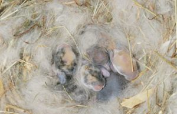

¿QUÉ CUIDADOS DEBE RECIBIR UNA CONEJA EMBARAZADA?
Paso 1
Lo primero que debes saber es cuánto dura el embarazo de una coneja para calcular con más precisión la fecha del parto. En general, acostumbra a oscilar los 31 días desde la monta pero, si no reparaste en el día exacto de la monta deberás palpando la zona del estómago para notar los gazapos. Cuando al palpar notes como unos bultitos sabrás que tu coneja está preñada.
Paso 2
Lo primero que debes saber es cuánto dura el embarazo de una coneja para calcular con más precisión la fecha del parto. En general, acostumbra a oscilar los 31 días desde la monta pero, si no reparaste en el día exacto de la monta deberás palpando la zona del estómago para notar los gazapos. Cuando al palpar notes como unos bultitos sabrás que tu coneja está preñada.
Paso 3
Durante todo el periodo de gestación deberás olvidarte de racionarle la alimentación y proporcionar a tu coneja cuanta comida desee. Recuerda que ahora no solo se alimenta por ella, también lo hace por los conejitos y, por ende, requiere de más alimento.
Paso 4
Es importante que esté siempre hidratada, sobre todo si el embarazo se produce durante las épocas de calor, puesto que sus hormonas se encuentran en constante cambio y necesitará ingerir una cantidad mayor de líquido. Es importante que mantengas esta nueva alimentación hasta que se produzca el destete de las crías, entonces deberás volver a racionale la comida. Si no recibe todo el líquido que necesita una vez haya parido, puede incluso comerse a sus crías.
Paso 5
Las conejas preparan un nido para el momento del parto y suelen hacerlo con prácticamente cualquier material que encuentren, heno, su propio pelo, hojas e incluso prendas de ropa nuestra. Por ello, es importante que le facilitemos esta tarea proporcionándole el material, como por ejemplo más cantidad de heno, paja prensada, serrín prensado, cáñamo, etc. Si no tienes jaula para tu coneja, deberás habilitar algún espacio, como una caja, para el nido.
Paso 6
Deberás tratar a tu coneja embarazada con mucha suavidad y, en la medida de lo posible, no cogerla para que no se ponga nerviosa ni se estrese. Es muy importante evitar cualquier situación que pueda generarle estrés o ansiedad puesto que podría sufrir un aborto. Eso sí, siempre manteniendo su rutina diaria, no es aconsejable alterar sus hábitos ni agoviarla con una atención excesiva.
Paso 7
Siempre es aconsejable que lleves a tu coneja al veterinario para que realice un seguimiento de su embarazo y puedas asegurarte de que todo va correctamente. Cuando los gazapos nazcan, deberás vigilar que no salgan del nido puesto que necesitan sentir el calor de la madre para sobrevivir.